정보처리기능사 (2008-10-05 기출문제)
1과목: 전자 계산기 일반
1. JK 플립플롭(Flip Flop)에서 보수가 출력되기 위한 J, K의 입력 상태는?
- J=1, K=0
- J=0, K=1
- J=1, K=1
- J=0, K=0
(정답률: 85%)

2. 보기의 도형과 관련 있는 것은?
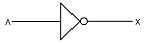
- OR게이트
- 버퍼(buffer)
- NAND게이트
- 인버터(Invert)
(정답률: 72%)
3. 논리식
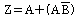
를 간소화 하면 결과는?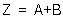
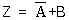
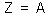
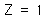
(정답률: 44%)
4. 중앙처리장치(CPU)에 해당하는 부분을 하나의 대규모 집적회로의 칩에 내장시켜 기능을 수행하게 하는 것은?
- 마이크로프로세서
- 컴파일러
- 소프트웨어
- 레지스터
(정답률: 83%)
5. 명령의 오퍼랜드 부분에 실제 데이터가 기록되어 있어 메모리 참조를 하지 않고 데이터를 처리하는 방식으로 수행 시간이 빠르지만 오퍼랜드 길이가 한정되어 실제 데이터의 길이에 제약을 받는 주소지정 방식은?
- Direct Addressing
- Indirect Addressing
- Relative Addressing
- Immediate Addressing
(정답률: 69%)
6. 배타적 논리합(XOR) 게이트를 나타내는 논리기호는?
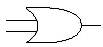
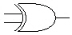
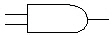
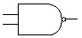
(정답률: 88%)
7. 명령어의 주소(Address)부를 연산 주소(Address)로 이용하는 주소지정방식은?
- 상대 Addressing 방식
- 절대 Addressing 방식
- 간접 Addressing 방식
- 직접 Addressing 방식
(정답률: 52%)
8. 연산자의 기능과 거리가 먼 것은?
- 주소지정 기능
- 제어 기능
- 함수연산 기능
- 입/출력 기능
(정답률: 62%)
9. 자외선을 이용하여 메모리를 지우고 Writer로 다시 프로그램을 입력할 수 있는 기억소자는?
- ROM
- EEPROM
- CMOS
- EPROM
(정답률: 64%)
10. 논리적 연산의 종류에 해당하지 않는 것은?
- AND
- OR
- Rotate
- ADD
(정답률: 65%)
11. 다음 논리회로에서 입력 A, B, C에 대한 출력 Y의 값은?
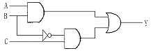
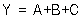
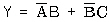
(정답률: 83%)
12. 디스크 팩이 6장으로 구성되었을 때 사용하여 기록할 수 있는 면의 수는?
- 6
- 8
- 10
- 12
(정답률: 78%)
13. 입/출력 장치와 중앙처리장치의 속도 차이로 인한 단점을 해결하는 장치는?
- 채널장치
- 제어장치
- 터미널장치
- 콘솔장치
(정답률: 78%)
14. 특정한 장치에서 사용되는 정보를 다른 곳으로 전송하기 위하여 일정한 규칙에 따라 암호로 변환하는 장치는?
- 명령계수기
- 명령레지스터
- 부호기(Encoder)
- 해독기(Decoder)
(정답률: 66%)
15. 주기억장치에서 자료 표현의 최소 단위는?
- 레코드(Record)
- 바이트(Byte)
- 셀(Cell)
- 블록(Block)
(정답률: 73%)
16. 주소지정방식 중 기억장치에 접근할 피연산자가 없는 것으로 산술에 필요한 명령어는 스택 구조 형태에서 처리하도록 하는 것은?
- 0-주소 형식
- 1-주소 형식
- 2-주소 형식
- 3-주소 형식
(정답률: 78%)
17. 명령어(Instruction)의 구성을 가장 바르게 표현한 것은?
- 명령코드부와 번지부로 구성
- 오류검색 코드형식
- 자료의 표현과 주소지정방식
- 주 프로그램과 부 프로그램
(정답률: 77%)
18. 두 비트를 더해서 합(S)와 자리올림수(C)를 구하는 반가산기에서 올림수(Carry) 비트를 나타낸 논리식은?
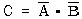
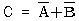
(정답률: 47%)
19. 입출력 장치의 동작속도와 전자계산기 내부의 동작 속도를 맞추는데 사용되는 레지스터는?
- 시퀀스레지스터(Sequence Righter)
- 시프트레지스터(Shift Righter)
- 버퍼레지스터(Buffer Righter)
- 어드레스레지스터(Address Righter)
(정답률: 79%)
20. 주기억장치, 제어장치, 연산장치 사이에서 정보가 이동되는 경로이다. 빈 부분에 알맞은 장치는?
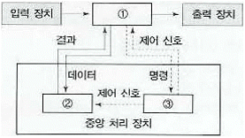
- ① 제어장치 ② 주기억장치 ③ 연산장치
- ① 주기억장치 ② 연산장치 ③ 제어장치
- ① 주기억장치 ② 제어장치 ③ 연산장치
- ① 제어장치 ② 연산장치 ③ 주기억장치
(정답률: 78%)
2과목: 패키지 활용
21. 데이터베이스 개체(Entity)의 속성 중 하나의속성이 가질 수 있는 모든 값의 집합을 무엇이라고 하는가?
- 객체(Object)
- 속성(Attribute)
- 도메인(Domain)
- 카디널러티(Cardinality)
(정답률: 79%)
22. 프리젠테이션 프로그램의 사용 용도로 거리가 가장 먼 것은?
- 교육자료 작성
- 제품 설명회 및 자료 작성
- 통계자료 계산
- 회의자료 작성
(정답률: 84%)
23. 다음은 무엇에 대한 설명인가?
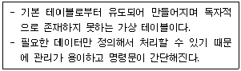
- VIEW
- TUPLE
- CARDINALITY
- DOMAIN
(정답률: 70%)
24. 수치계산과 관련된 업무에서 계산의 어려움과 비효율성을 개선하여 전표의 작성, 처리, 관리를 쉽게 할 수 있도록 한 것은?
- 스프레드시트
- 데이터베이스
- 프리젠테이션
- 워드프로세서
(정답률: 80%)
25. DBA의 역할로 거리가 먼 것은?
- DBMS의 성능향상을 위한 데이터의 저장구조 및 접근방법의 결정
- 데이터베이스의 생성과 삭제
- 데이터 보안에 대한 조치
- 최종 사용자를 위한 응용프로그램의 개발
(정답률: 68%)
26. SQL 문의 형식으로 적당하지 않은 것은?
- SELECT - FROM - WHERE
- UPDATE - FROM - WHERE
- INSERT - INTO - VALUES
- DELETE - FROM - WHERE
(정답률: 68%)
27. 3단계 스키마(SCHEMA)의 종류가 아닌 것은?
- 개념스키마
- 외부스키마
- 관계스키마
- 내부스키마
(정답률: 83%)
28. SQL의 명령 중 DDL에 해당하는 것은?
- SELECT
- UPDATE
- ALTER
- INSERT
(정답률: 66%)
29. 다음 SQL 명령문의 의미로 가장 적절한 것은?
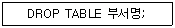
- 부서명 테이블에 검색하라.
- 부서명 테이블을 삭제하라.
- 부서명 필드를 생성하라.
- 부서명 필드를 검색하라.
(정답률: 86%)
30. 스프레드시트에서 입력의 기본 단위를 무엇이라고 하는가?
- 함수
- 셀
- 테이블
- 슬라이드
(정답률: 84%)
3과목: PC 운영 체제
31. “윈도 98”에서 단축 아이콘에 대한 설명으로 옳지 않은 것은?
- 바탕화면에서 단축 아이콘을 삭제하면 실제 연결되어 있는 프로그램도 삭제된다.
- 실제 실행파일과 연결해 놓은 아이콘을 말한다.
- 사용자 임의로 단축아이콘을 생성하거나 삭제시킬 수 있다.
- 일반 아이콘과 다른 것은 아이콘 밑에 화살표가 표시되어 있다.
(정답률: 80%)
32. UNIX에서 파일을 삭제할 때 사용되는 명령어는?
- ls
- cp
- pwd
- rm
(정답률: 76%)
33. 도스(MS-DOS)에서 두 개의 파일을 비교하여 그 차이를 나타내는 명령은?
- SHARE
- VER
- MOVE
- FC
(정답률: 52%)
34. 도스(MS-DOS)에서 [Ctrl]+[Alt]+[Delete]를 눌러 재부팅하였다. 이러한 재부팅 방법을 무엇이라 하는가?
- 콜드 부팅(Cold Booting)
- 웜 부팅(Worm Booting)
- 하드 부팅(Hard Booting)
- 핫 부팅(Hot Booting)
(정답률: 70%)
35. Which one is not related to Processing Program?
- Language Translate Program
- Service Program
- Job Management Program
- Problem Program
(정답률: 65%)
36. UNIX에서 현재 실행중인 프로세스를 종료하기 위한 명령어는?
- ps
- del
- kill
- stop
(정답률: 62%)
37. 유닉스(UNIX) 명령어 중 DOS의 DIR과 같은 역할을 하는 명령은?
- ls
- cd
- pwd
- cp
(정답률: 62%)
38. “윈도 98”의 탐색기에서 연속적인 여러 개의 파일을 한꺼번에 선택할 때 마우스와 함께 사용하는 키는?
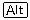
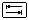
(정답률: 70%)
39. 운영체제의 특성으로 옳지 않은 것은?
- 신뢰성
- 효율성
- 복잡성
- 용이성
(정답률: 80%)
40. DOS(MS-DOS) 명령어 중 COMMAND.COM 파일이 관리하는 것은?
- CHKDSK
- DELTREE
- COPY
- FORMAT
(정답률: 52%)
41. 다음 ( ) 안의 내용으로 적절하지 않은 것은?
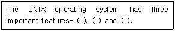
- Kernel
- Shell
- File System
- Compiler
(정답률: 58%)
42. 도스(MS-DOS) 부팅 시 반드시 필요한 시스템 파일에 해당하지 않는 것은?
- MSDOS.SYS
- COMMAND.COM
- IO.SYS
- CONFIG.SYS
(정답률: 63%)
43. “윈도 98”에서 DOS의 디렉터리와 유사한 의미를 가진 것은?
- 파일(File)
- 트리(Tree)
- 로그오프(Log-off)
- 폴더(Folder)
(정답률: 52%)
44. “윈도 98”의 휴지통에 대한 설명으로 옳지 않은 것은?
- 삭제한 파일을 임시 저장하며 휴지통 내에 파일을 다시 복구할 수 있다.
- 휴지통의 크기를 변경시킬 수 없다.
- 파일 삭제시 휴지통에 보관하지 않고 즉시 삭제할지의 여부를 지정할 수 있다.
- 파일 삭제 시 삭제 확인 메시지를 보이지 않게 지정할 수 있다.
(정답률: 73%)
45. “윈도 98”의 메모장을 이용하여 문서를 작성하고 저장했을 때의 기본적인 파일 확장자명으로 옳은 것은?
- hwp
- txt
- doc
- bmp
(정답률: 76%)
46. 다중 프로그래밍 상에서 두 개의 프로세스가 실행 중에 있게 되면, 각 프로세스는 자신이 필요한 자원을 가지고 실행되다가 서로 자신이 점유하고 있는 자원을 포기하지 않은 상태에서 다른 프로세스의 자원을 요구하는 경우가 발생한다. 이 경우 두 프로세스는 모두 더 이상 실행을 할 수 없게 된다. 이러한 현상을 무엇이라 하는가?
- 교착상태(Dead Lock)
- 세마포어(Semaphore)
- 가상시스템(Virtual System)
- 임계영역(Critical Section)
(정답률: 83%)
47. 도스(MS-DOS)에서 ATTRIB 명령어의 옵션에 대한 설명으로 옳지 않은 것은?
- 백업파일 속성 : A
- 시스템파일 속성 : S
- 읽기전용파일 속성 : P
- 숨김파일 속성 : H
(정답률: 72%)
48. 컴퓨터 시스템의 성능을 최적화하기 위하여 사용되는 운영체제의 기능과 거리가 먼 것은?
- 초기 설정 기능
- 인터페이스 기능
- 이식성 기능
- 시스템 비보호 기능
(정답률: 68%)
49. 컴퓨터 시스템을 구성하고 있는 하드웨어 장치와 일반 사용자에서 실행되는 응용 프로그램의 중간에 위치하여 컴퓨터 시스템을 제어하고 관리하는 것은?
- Operating System
- Loader
- Compiler
- Interpreter
(정답률: 68%)
50. “윈도 98”에서 “디스크 조각 모음”에 대한 설명으로 옳지 않은 것은?
- 디스크 조각 모음은 불량(Bad) 섹터를 치료해 준다.
- 사용 중인 디스크의 효율 향상을 위하여 수행한다.
- 디스크 조각 모음 작업 중에도 다른 작업을 수행 할 수 있다.
- 하드디스크뿐만 아니라 플로피디스크도 조각 모음을 할 수 있다.
(정답률: 49%)
4과목: 정보 통신 일반
51. 다음 중 LAN의 특징이 아닌 것은?
- 광대역 전송매체의 사용을 고속 통신이 가능하다.
- 광역 공중망의 통신에 적합하다.
- 정보처리기기의 재배치 및 확장성이 우수하다.
- 다양한 디지털 미디어 정보의 전송이 가능하다.
(정답률: 45%)
52. 광섬유를 이용한 LAN으로 전송로의 속도가 100[Mbps]의 전송이 가능한 것은?
- X.25
- X.28
- FDDI
- ANSI
(정답률: 39%)
53. 동기식 전송 방식에 사용되는 SDLC, HDLC에서 주로 데이터 전송시 사용하는 에러 검출 방식은?
- 패리티 방식
- ARQ 방식
- 정마크부호 방식
- CRC 방식
(정답률: 22%)
54. 변조 속도가 2400[Baud]이고 쿼드비트(Quadbit)를 사용하는 경우 전송 속도는 몇 [bps] 인가?
- 1600
- 2400
- 4800
- 9600
(정답률: 67%)
55. 다음 중 동영상 압축을 위한 것은?
- JPEG
- MPEG
- MIDI
- CD-R
(정답률: 59%)
56. 하나의 통신 선로를 이용하여 여러 신호를 서로 간섭받지 않고 전송함으로써 통신 선로의 이용 효율을 높일 수 있는 장치는?
- 다중화기
- 단말기
- 변/복조기
- PBX
(정답률: 42%)
57. 다음 전송 제어 문자 중 정의가 잘못된 것은?
- EOT - 전송 종료
- DLE - 문자 동기
- ACK - 긍정 응답
- ETX - 텍스트 종료
(정답률: 52%)
58. HDLC 전송 프레임 중에서 시작과 끝을 나타내는 것은?
- 제어(CONTROL) 부
- 프레임 검사 시퀀스(FCS)
- 플래그(FLAG)
- 주소(ADDRESS) 부
(정답률: 56%)
59. 모뎀과 단말기 간을 연결해주는 RS-232C 25핀 커넥터의 기능에 해당되지 않는 것은?
- 전기적 장치
- 데이터의 송수신
- 인터페이스
- 전자 유도 차폐
(정답률: 47%)
60. 다음 중 대역 확산 기술을 이용한 다량 접속 방식에 해당되는 것은?
- TDMMA
- CDMA
- FDMA
- WDMA
(정답률: 36%)